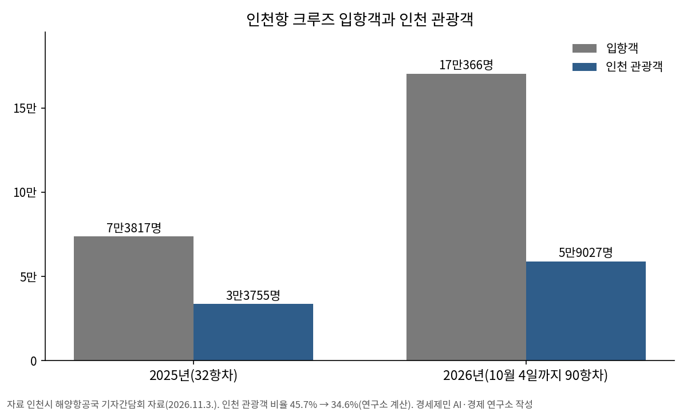

인천항 크루즈 올해 113항차·내년 132항차…시, 지역축제·상권 연계 관광 강화
2025년 32항차에서 3.5배로
입항객 17만 명 가운데 인천 관광은 5만9000명
3월 예정 133항차보다는 20항차 줄어
AI경제저널=김갑봉 기자 | 인천시(시장 박찬대)는 인천항 크루즈 입항이 2025년 32항차에서 올해 113항차로 늘어날 예정이라고 3일 밝혔다. 인천항만공사는 2027년 132항차 입항을 예정하고 있다.
시는 이날 해양항공국 기자간담회에서 크루즈 관광객을 인천의 관광지와 지역축제로 이끌고 소비가 지역 상권으로 이어지도록 관광 콘텐츠를 늘리겠다고 밝혔다.
입항객 17만 명, 인천 관광 5만9000명
해양항공국 기자간담회 자료를 보면 올해 크루즈는 10월 4일까지 90항차가 들어왔다. 입항객 17만366명 가운데 인천을 관광한 사람은 5만9027명이다.
2025년에는 32항차에 입항객 7만3817명이 들어와 3만3755명이 인천을 관광했다. 입항객 가운데 인천 관광객 비율은 2025년 45.7%에서 올해 34.6%로 내려갔다(연구소 계산).
올해 113항차는 모항 11항차와 기항 102항차다. 시는 지난달 16일 인천공항 접근성을 활용한 「플라이 앤 크루즈」 모항 운항이 2023년 2항차에서 올해 11항차로 늘었다고 밝혔다. 시는 승객이 인천항에서 내리고 새로 타는 모항이 단순 기항보다 경제적 효과가 높다고 설명했다. 2027년 132항차는 모항 18항차, 기항 114항차다. 올해 크루즈 산업 활성화 예산은 7억2000만원(국비 4억5000만원, 시비 2억7000만원)이고 인천관광공사가 위탁 수행한다.
시는 올해 3월 10일 크루즈산업발전위원회를 열고 「제2차 인천 크루즈 산업 육성 5개년 계획(2026~2030)」 자문을 받았다. 시는 당시 올해 133항차(약 20만 명) 입항이 예정돼 있다고 밝혔다. 지금 예정된 113항차는 그보다 20항차 적다.

축제 셔틀, 팝업스토어
시는 지난 10월 인천 짜장면축제와 제물포 웨이브 마켓, 인천경제자유구역 글로벌 페스티벌, 인천 동행축제에 크루즈 관광객을 무료 셔틀버스로 실어 날랐다.
문화체육관광부가 한국관광공사를 거쳐 지원하는 크루즈 기항지 활성화 사업으로 「인천 팝업스토어」도 지난달 25일 인천 크루즈항에서 처음 열었다. 인천시와 인천관광공사가 기획하고 인천항만공사가 협업했다.
팝업스토어는 11월까지 네 차례 운영한다. 인천지방중소벤처기업청과 연계해 지역 상점 20여 곳이 특산물과 공산품을 내놓는다.
내년엔 로컬 맛집·쇼핑 코스
시는 2027년 로컬 맛집과 쇼핑 코스, 향토색 있는 관광 명소를 찾아 인천 특화 테마상품과 관광 코스를 만든다. 단체·개별 관광객과 승무원 등 대상별로 할인쿠폰과 무료 셔틀을 지원한다.
여행지별 숏폼 영상을 만들어 크루즈 홍보에 쓰고 인플루언서와 연계한 홍보도 펼친다.
박광근 시 해양항공국장은 "2027년에는 크루즈 입항의 양적 성장에 걸맞은 질적 성장을 이뤄, 인천 크루즈 관광의 경쟁력을 한층 높이겠다"고 말했다.
참고문헌
- "인천의 숨은 매력 발굴해 동북아 크루즈 관광 거점 도약", 인천시, 2026.11.3., https://www.incheon.go.kr/IC010205
- "해양항공국 기자 간담회 자료", 인천시 해양항공국, 2026.11.3.
- "인천시, 크루즈 모항 입항 맞춤형 지원, 동북아 거점 도시 입지 다진다", 인천시, 2026.10.16., https://www.incheon.go.kr/IC010205/view?repSeq=DOM_0000000015769281
- "크루즈 133항차·20만명 인천 찾는다... 인천시, 동북아 크루즈 허브 도약 시동", 인천시, 2026.3.10., https://www.incheon.go.kr/IC010205/view?repSeq=DOM_0000000014302250
- "인천 크루즈 관광객 3만 3천 명 돌파 … 동북아 기항지 위상 강화", 인천시, 2026.1.4., https://www.incheon.go.kr/IC010205/view?repSeq=DOM_0000000013859216
[사진 출처]
- [사진1] 인천시, 「크루즈 모항 입항 맞춤형 지원, 동북아 거점 도시 입지 다진다」 보도자료 사진, 2026.10.16., 공공누리 제1유형(출처표시), https://www.incheon.go.kr/IC010205/view?repSeq=DOM_0000000015769281
관련기사
- [해양경계] 한중 해양경계 16차 회담, 서해5도 앞에서 멈춘 세 경계선
- [해상풍력 기획①] 인천 해상풍력, 섬 주민 몫은 법에 없다… 세 갈래 공백
- [해양 AI 융복합⑫] 실증·인증 한데 모을 광양 첨단항만기술원 구상, 2027년 타당성 검토 앞둔 입지 논쟁
- [인천해양주권⑮] 인천항 투자 65% 줄 때 부산항은 84% 늘었다
저작권자 © AI경제저널 무단전재 및 재배포, AI학습 및 활용 금지